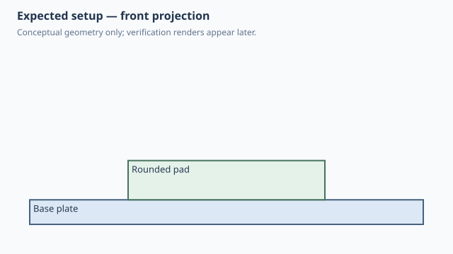

Forge model example
Explicit rounded-rectangle sketch pad
What this example makes
The result is one joined body: an 80 x 60 x 5 mm base plate with a centered 40 x 30 x 8 mm rounded pad on top. The Rounded pad sketch has one closed profile made from four straight edges and four corner arcs. SolidCraft 0.42 also adds one construction diagonal between opposite arc centres; that construction line is not part of the profile.

Forge code
This is the complete Forge source used for this example.
"""Qualification: RoundedRectangle2D in an explicit named Sketch."""
class RoundedRectangleSketch:
base_width = 80.0
base_depth = 60.0
base_height = 5.0
pad_width = 40.0
pad_depth = 30.0
radius = 5.0
pad_height = 8.0
def build(self):
body = Box(
self.base_width,
self.base_depth,
self.base_height,
anchor=Anchor.BOTTOM,
)
with Sketch(name="Rounded pad", on=body) as pad:
pad.add(
RoundedRectangle2D(
self.pad_width,
self.pad_depth,
self.radius,
),
)
return body + pad.extrude(self.pad_height)
RoundedRectangleSketch()
API used
with Sketch(name='Rounded pad', on=body): add(RoundedRectangle2D(...)); body + sketch.extrude(...)
Reference code
The same model is written independently with the reference libraries below. This makes it easier to compare modelling style and the resulting shape.
PythonSCAD
"""PythonSCAD reference for the centered rounded pad qualification intent.
No manual half-width/half-depth placement correction is needed: the 2D profile
is centered by construction.
"""
from pythonscad import *
base_width = 80.0
base_depth = 60.0
base_height = 5.0
pad_width = 40.0
pad_depth = 30.0
radius = 5.0
pad_height = 8.0
base = cube([base_width, base_depth, base_height], center=True).up(base_height / 2)
profile = square(
[pad_width - 2 * radius, pad_depth - 2 * radius],
center=True,
).offset(r=radius)
pad = profile.linear_extrude(height=pad_height).up(base_height)
model = base | pad
pyBOSL2
"""pyBOSL2 reference for the centered rounded pad qualification intent.
The rounded 2D rect defaults to Anchor.CENTER, so centering is semantic rather
than encoded as a numeric (-width/2, -depth/2) offset.
"""
from pybosl2 import Anchor, cuboid, rect
base_width = 80.0
base_depth = 60.0
base_height = 5.0
pad_width = 40.0
pad_depth = 30.0
radius = 5.0
pad_height = 8.0
base = cuboid([base_width, base_depth, base_height]).up(base_height / 2)
profile = rect(
[pad_width, pad_depth],
rounding=radius,
anchor=Anchor.CENTER,
)
pad = profile.linear_extrude(height=pad_height).up(base_height)
model = base | pad
CadQuery
"""CadQuery reference for a centered rounded pad on a rectangular base."""
import cadquery as cq
base_width = 80.0
base_depth = 60.0
base_height = 5.0
pad_width = 40.0
pad_depth = 30.0
radius = 5.0
pad_height = 8.0
base = cq.Solid.makeBox(
base_width,
base_depth,
base_height,
cq.Vector(-base_width / 2, -base_depth / 2, 0),
)
pad = (
cq.Workplane("XY")
.rect(pad_width - 2 * radius, pad_depth - 2 * radius)
.offset2D(radius, kind="arc")
.extrude(pad_height)
.translate((0, 0, base_height))
)
model = cq.Assembly()
model.add(base, name="base")
model.add(pad, name="pad")
build123d
"""build123d reference: a true rounded sketch pad on a rectangular base."""
from build123d import (
Align,
Axis,
Box,
BuildPart,
BuildSketch,
RectangleRounded,
extrude,
)
base_width, base_depth, base_height = 80.0, 60.0, 5.0
pad_width, pad_depth, radius, pad_height = 40.0, 30.0, 5.0, 8.0
bottom = (Align.CENTER, Align.CENTER, Align.MIN)
with BuildPart() as model:
Box(base_width, base_depth, base_height, align=bottom)
with BuildSketch(model.faces().sort_by(Axis.Z)[-1]):
RectangleRounded(pad_width, pad_depth, radius)
extrude(amount=pad_height)
How Forge builds it in SolidCraft
The named explicit Sketch emits one sketch.rectangle.rounded with true arc corners, then a native solid.extrude(operation='join').
Show generated SolidCraft commands
parameters.add
parameters.add
parameters.add
parameters.add
parameters.add
parameters.add
parameters.add
solid.box
model.faces
sketch.create
sketch.rectangle.rounded
sketch.finish
solid.extrudeSolidCraft result
Technical test details
Q1 and Q2 tests
These are the exact automated tests used for this example.
- Q1 NOT RUN
- Q2 NOT RUN
Geometry checks
These are the sizes and measurement points used by the automated checks.
| Body | Minimum | Maximum |
|---|---|---|
| RoundedRectangleSketch | [-40, -30, 0] | [40, 30, 13] |
- Is the size check enough for this model? No — A sharp rectangular pad can share the same envelope. Rounded-pad volume and a corner-distance probe are required.
- Views checked: top, front, iso
- Expected volume: 33428.31853071796 mm³ (±60.0 mm³)
- Closed solid expected: True
- Surface points checked: 1
Show all geometry check points
Surface measurement points
- rounded pad corner: point
[20.0, 15.0, 9.0]→ 2.0710678118654755 mm (±0.3 mm)
Saved-design test
No saved-model change is required. No saved-design mutation in this fixture; it isolates explicit rounded-rectangle sketch geometry and native join extrusion.
Raw test files
- Forge fixture source
- PythonSCAD reference source
- pyBOSL2 reference source
- CadQuery reference source
- build123d reference source
- Generated command JSON in build output
Reference documentation
- SolidCraft: Native rounded sketch rectangles preserve true arc geometry and remain inspectable in the saved sketch.
- PythonSCAD: The explicit Sketch scope keeps 2D profile authoring separate from the subsequent 3D extrusion.